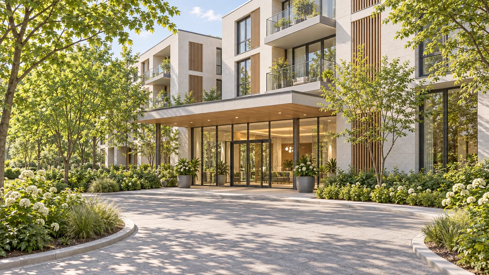
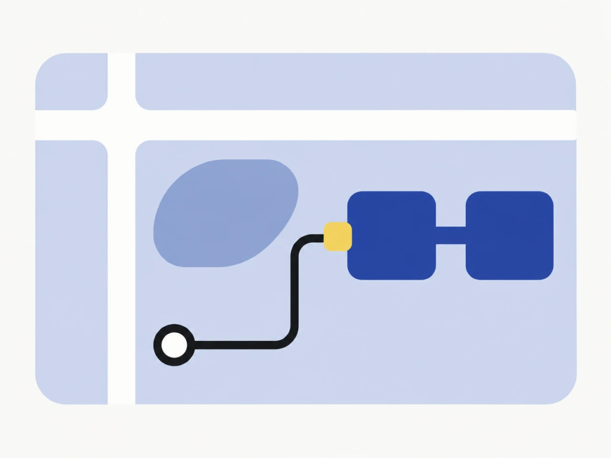

오시는 길
오시기 전에 전화로 날짜를 먼저 잡아 주세요.

유리로 된 1층 입구가 정문이에요.AI로 만든 가상 사진

- 가상선 안뜰역
- 2번 출구
- 안뜰공원
- Evenstay 정문
- A동
- B동
가상시 안뜰구 머묾로 12 (가상 주소)
가상선 안뜰역 2번 출구로 나오세요.
가상 버스 12번을 타고 안뜰공원 정류장에서 내리세요.
차로 오시면 주차할 곳을 방문 전에 전화로 물어봐 주세요.
오시기 전에 전화로 날짜를 먼저 잡아 주세요.
궁금하신 점이 있으면 상담을 신청해 주세요. 숙소와 비용은 상담 때 안내해 드려요.